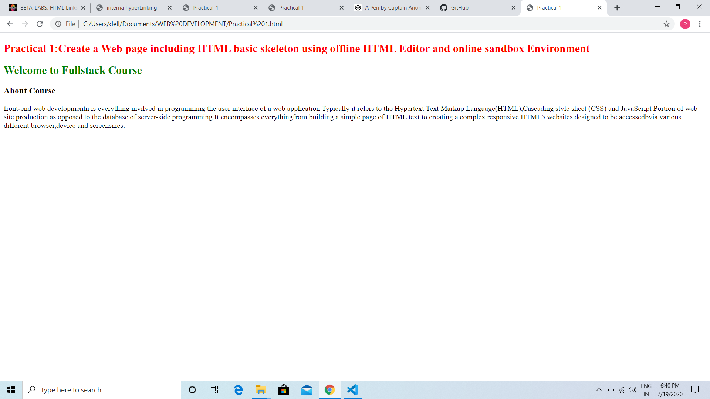
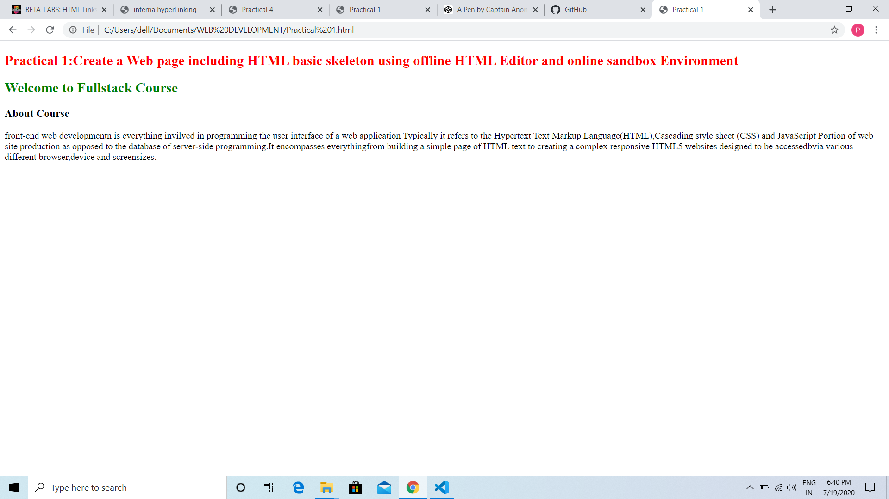

front-end web developmentn is everything invilved in programming the user interface of a web application Typically it refers to the Hypertext Text Markup Language(HTML),Cascading style sheet (CSS) and JavaScript Portion of web site production as opposed to the database of server-side programming.It encompasses everythingfrom building a simple page of HTML text to creating a complex responsive HTML5 websites designed to be accessedbvia various different browser,device and screensizes.
 
